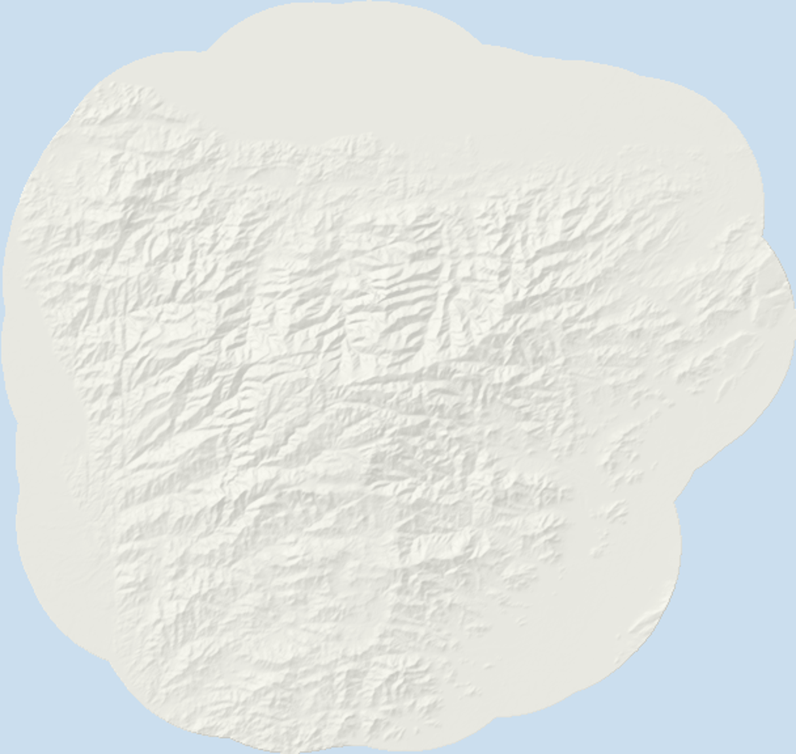

Fija el área y la resolución de trabajo, luego carga o elige del catálogo una capa por criterio. Los archivos se leen en tu navegador: no se suben originales al servidor.
✓Área2Capas3Reglas4Pesos5Mapa
Paso 1 · Área de estudio

Paquete
WorldClim, SoilGrids, Copernicus DEM, RUNAP — 250 m/píxel. Ver atribuciones
Sistema de coordenadasEPSG:9377 · MAGNA-SIRGAS Origen-Nacional
Resolución250 × 250 m
608 × 576 = 350 208 píxeles · 6.25 ha/píxel
Cuota del proyecto2.4 / 30 MB
Paso 2 · Capas por criterio
Precipitación
Catálogo · WorldClim BIO12 (precipitación anual)
Lista · 0.4 MB
Temperatura
Catálogo · WorldClim BIO1 (temperatura media anual)
Lista · 0.4 MB
pH del suelo
Catálogo · SoilGrids 0–5 cm
Lista · 0.4 MB
Pendiente
Derivada del DEM Copernicus GLO-30 · Catálogo
Calculada a 250 m
Irradiación solar no aplica a este caso
Ejemplo de otro caso (finca solar): sube tu propio GeoTIFF de Global Solar Atlas
Alineando… 63 %
Exclusiones y máscaras
Arrastra un shapefile (.zip) o GeoJSON, o elige un archivo Ya cargada: PNN Sierra Nevada + Tayrona (RUNAP) · páramo ≥ 3 000 msnm